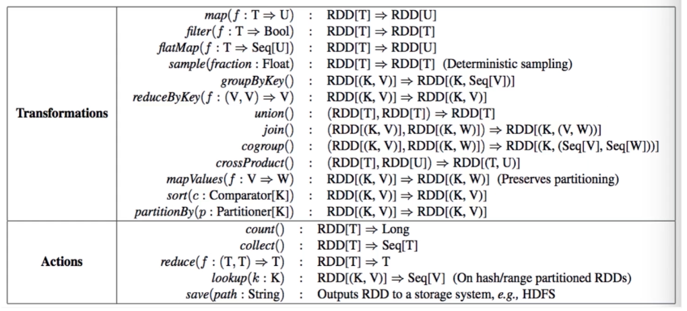

Spark简介
Spark是一个高性能的、多用途的开源集群计算框架
Spark是Apache基金会最重要的项目之一,是现在大数据领域最热门的大数据计算平台之一
Spark不仅具备Hadoop MapReduce的优 ,且解决了MapReduce的缺陷

Spark优势
支持多种数据源，如HDFS、 S3、JDBC等
支持多种运行模式，如Local, Standalone,Cluster
包含多个完整强大的组件,如SparkCore, SparkSql SparkML
多语言且支持交互式,支持Scala, Java,Python, R
很好的兼容Hadoop生态,能够访问HDFS,支持on Yarn
运行运行速度快，计算效率高，中间结果不落地,在内存中进行,通过构建DAG图,即使某一步失败也能很快重新计算
Spark组件
Spark架构以及执行流程
Spark名词
Driver: Spark应用的任务控制节点
Executor: Spark应用的任务的执行进程
Cluster Manager: Spark任务的资源管理器,如最常用的Yarn
Application:应用,即我们提交到Spark的执行程序
Job: Spark中对RDD进行Action操作所产生的RDD处理流程
Stage:阶段,一个Job会切分i多 Stage,各个Stage之ii照顺序执行
SparkContext:整个应用的上下文,控制应用的生命周期
RDD:弹性分布式数据集( Resilient Distributed Dataset)
DAG:是Directed Acyclic Graph (有向无环图)的简称,反映RDD之间的依赖关系
Spark on yarn
Spark 架构简介
Spark运行架构包括Cluster Manager, Driver和Executor
Executor内有线程池,通过多线程执行相关任务
Task的中间结果直接写入到内存，有效减少1O开销
Spark Application
一个Spark Application包含一个Driver和多个Job
一个ob包含多个Stage,一个Stage又包含多个Task
Spark执行流程
提交应用后, Driver会创建SparkContext实例,申请资源
ClusterManager分配资源,启动Executor进程, Executor向Driver注册并申请任务
SparkContext生成DAG图通过DAGScheduler解析,生成多个Stage并通过TaskScheduler分配到各个Executor执行
Spark执行特点
Job的执行过程与资源管理器无关,资源管理器只分配资源
Executor含有线程池,以多线程的方式提高任务的执行效率
每个Task产生的结果会放入内存,避免了大量的10开销
RDD简介以及特性
RDD简介
RDD全称叫做弹性分布式数据集(Resilient Distributed Datasets)
RDD是一种分布式的内存抽象,表示一个只读的记录分区的集合
RDD是Spark的核心,我们编写Spark程序本质上是对RDD进行各种转换操作
RDD特性
只读: RDD只能通过其他RDD转换而创建,所以RDD之间存在依赖,可以认为是RDD的血缘关系
分区: RDD逻辑上是分区的,各个分区可以保存到不同节点,从而可以进行并行计算
转换: RDD之间可以通过丰富的算子进行转换,这些RDD之间维护 这依赖关系
RDD操作
RDD支持两种类型的操作: Transformation(变换)和Action(行动)
变换:变换的返回值是一个新的RDD集合,而不是单个值。map, filter, flatMap, groupByKey
行动:行动操作计算并返回一个新的值。reduce, collect, count, first, take
RDD算子

RDD转换示例
RDD特性总结
只读,可分区
高度容错,支持java对象
可缓存,可持久化到磁盘
RDD依赖关系
窄依赖:父子RDD之间的分区是一一对应的
宽依赖:子RDD的每个分区与父RDD的所有分区都有关系,是多对多的关系
Stage划分
窄依赖中的转换操作与RDD中其他分区无关,可以通过类似管道的方式一气呵成的执行完成
宽依赖的转换操作涉及到RDD不同的分区,需要数据的重新整理(Shuffle ) ,产生数据交互
Stage的划分就是由依赖关系决定的,原则是遇窄依赖不变,遇宽依赖则进行划分。使窄依赖尽量多的在一起
Spark三种运行模式
Spark安装
从Spark下载地址下载Spark安装包，我们课程中选择的是spark-2.4.4-bin-hadoop2.7版本。
1 | tar zxvf spark-2.4.4-bin-hadoop2.7.tgz |
三种不同的运行模式的相关配置都在conf文件夹下的spark-env.sh中。我们依次来看一下这三种不同的运行模式。
我们对spark-env.sh进行一下配置：
1 | # 设置JAVA_HOME |
然后配置环境变量：
1 | export SPARK_HOME=/soft/home/spark-2.4.4-bin-hadoop2.7 |
Local模式
Local[n] 本地模式 启动n个线程，来模拟分布式计算
Local模式通常用于测试用，直接bin/spark-shell启动即可。
1 | # 默认即为local模式 |
Standalone模式
Standalone是Spark自带的资源管理器，无需依赖任何其他资源管理系统，通过配置slaves配置文件，在多台机器上进行分布式计算。
我们可以通过 start-master.sh 和 start-slaves.sh 启动spark集群的master和slaves。启动完成之后，使用命令jps查看进程。master机器上会有Master和Worker。slave机器上会有Worker进程。
通过访问 http://master_hostname:8080 可以看到spark的web界面。
那么我们如何链接standalone模式的spark集群呢？
1 | # 同样的我们通过指定master参数来提交任务 |
Cluster模式之On Yarn
On Yarn模式和Standalone模式不同之处在于，OnYarn模式使用Hadoop中的Yarn作为资源管理器，可以使spark程序跑在Hadoop集群当中，Spark on Yarn又分为yarn-cluster和yarn-client。
Yarn Cluster:主程序逻辑和任务都运行在Yarn集群中
Yarn Client:主程序逻辑运行在本地，任务运行在Yarn集群中
提交程序到yarn集群也非常的简单：
1 | #默认为client模式 |
现在我们对于Spark的三种运行模式都有了一定的了解了，我们来看一下Spark的执行流程
Spark三种模式执行流程
Spark基本执行流程

- 构建Spark Application的运行环境（启动SparkContext），SparkContext向资源管理器（可以是Standalone、Mesos或YARN）注册并申请运行Executor资源；
- 资源管理器分配Executor资源并启动StandaloneExecutorBackend，Executor运行情况将随着心跳发送资源管理器上；
- SparkContext构建成DAG图，将DAG图分解成Stage，并把Taskset发送给Task Scheduler。Executor向SparkContext申请Task
- Task Scheduler将Task发放给Executor运行同时SparkContext将应用程序代码发放给Executor。
- Task在Executor上运行，运行完毕释放所有资源。
Spark On Yarn Cluster的执行流程
在YARN-Cluster模式中，当用户向YARN中提交一个应用程序后，YARN将分两个阶段运行该应用程序：第一个阶段是把Spark的Driver作为一个ApplicationMaster在YARN集群中先启动；第二个阶段是由ApplicationMaster创建应用程序，然后为它向ResourceManager申请资源，并启动Executor来运行Task，同时监控它的整个运行过程，直到运行完成。
YARN-Cluster的工作流程分为以下几个步骤：
- Spark Yarn Client向YARN中提交应用程序，包括ApplicationMaster程序、启动ApplicationMaster的命令、需要在Executor中运行的程序等；
- ResourceManager收到请求后，在集群中选择一个NodeManager，为该应用程序分配第一个Container，要求它在这个Container中启动应用程序的ApplicationMaster，其中ApplicationMaster进行SparkContext等的初始化；
- ApplicationMaster向ResourceManager注册，这样用户可以直接通过ResourceManage查看应用程序的运行状态，然后它将采用轮询的方式通过RPC协议为各个任务申请资源，并监控它们的运行状态直到运行结束；
- 一旦ApplicationMaster申请到资源（也就是Container）后，便与对应的NodeManager通信，要求它在获得的Container中启动启动CoarseGrainedExecutorBackend，CoarseGrainedExecutorBackend启动后会向ApplicationMaster中的SparkContext注册并申请Task。这一点和Standalone模式一样，只不过SparkContext在Spark Application中初始化时，使用CoarseGrainedSchedulerBackend配合YarnClusterScheduler进行任务的调度，其中YarnClusterScheduler只是对TaskSchedulerImpl的一个简单包装，增加了对Executor的等待逻辑等；
- ApplicationMaster中的SparkContext分配Task给CoarseGrainedExecutorBackend执行，CoarseGrainedExecutorBackend运行Task并向ApplicationMaster汇报运行的状态和进度，以让ApplicationMaster随时掌握各个任务的运行状态，从而可以在任务失败时重新启动任务；
- 应用程序运行完成后，ApplicationMaster向ResourceManager申请注销并关闭自己。
Spark On Yarn Client的执行流程
SparkSQL简介
SQL on Hadoop
Hive的出现让技术人员可以通过类SQL的方式对批量数据进行查询，而不用开发MapReduce程序
MapReduce计算过程中大量的中间结果磁盘落地使运行效率较低
为了提高SQL on Hadoop的效率,各大工具应运而生,比如Shark, Impala等
SparkSQL简介
SparkSQL是Spark为处理结构化数据而引入的模块,前身是Shark
SparkSQL提供了一个DataFrame的编程抽象,底层依然为RDD
parkSQL是一个分布式的SQL查询引擎,支持标准SQL和HSQL
DataFram简介
类似于关系型数据库的table,是分布式数据集,可以认为是有Schema的RDD
一个DataFrame可以注册成一张表,支持sql操作和丰富的函数
有丰富的创建方式,支持Hive, JDBC、结构化文件、RDD等,可以与pandas的dataframe相互转换